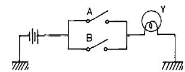
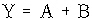
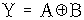
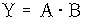
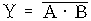
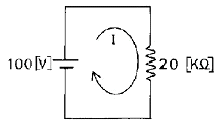
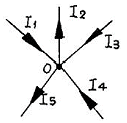
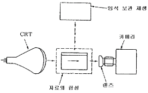

정보기기운용기능사 (2002-04-07 기출문제)
1과목: 전산 기초 이론
1. PC 사용시 C 드라이브에서 A 드라이브로 드라이브를 변경하는 명령은?
- C:\>A
- C:\>A:
- C:\>CD A:
- C:\>CD A
(정답률: 64%)

2. 컴퓨터간이나 컴퓨터와 단말장치 사이에 효율적이며, 신뢰성있는 정보를 주고받기 위해 미리 정보의 송·수신측 사이에 일상언어의 문법과 같이 설정한 법칙이나 규범을 무엇이라고 하는가?
- 네트워크(Network)
- 아키텍쳐(Architecture)
- 프로토콜(Protocol)
- 트렁크(Trunk)
(정답률: 86%)
3. 다음 기억 소자 중 자외선을 쬐어 메모리를 지우고 프로그램 writer로 다시 프로그램을 쓸 수 있는 것은?
- PROM
- EPROM
- DRAM
- CMOS
(정답률: 78%)
4. 어떤 부하저항에 흐르는 전류와 걸리는 전압을 측정하려고 한다. 접속방법이 옳은 것은?
- 전류계는 직렬접속, 전압계는 병렬접속
- 전류계는 직렬접속, 전압계는 직렬접속
- 전류계는 병렬접속, 전압계는 병렬접속
- 전류계는 병렬접속, 전압계는 직렬접속
(정답률: 69%)
5. 정보통신부장관이 비상사태가 발생하여 정보통신업무의 제한 또는 정지를 명한 후 이를 재개할 필요가 있어 다음 중 가장 먼저 소통하게 할 수 있는 관련 업무는?
- 민방위경보 전달
- 의료기관 업무
- 지방자치단체 업무
- 재해구호 업무
(정답률: 56%)
6. 전기통신의 전송이 이루어지는 유선 또는 무선의 전송구간의 계통적 통신망은?
- 선조
- 회로
- 선로
- 회선
(정답률: 68%)
7. 인쇄 방식 중 충격식에 대한 설명으로 틀린 것은?
- 잉크를 분사하여 인쇄하는 방식이다.
- 소음이 큰 편이며 잉크리본은 여러 번 사용할 수 있다.
- 충격식에는 도트 매트릭스식과 활자식이 있다.
- 활자식이 도트 매트릭스식보다 인쇄 속도가 빠르다.
(정답률: 65%)
8. 정보교환회선 서비스를 단기사용하고자 한다. 단기사용기간은?
- 10일 이내
- 50일 이내
- 15일 이내
- 30일 이내
(정답률: 69%)
9. 다음 중 순서도의 작성은 언제하여야 적당한가?
- 타당성 조사 후
- 입출력 설계 후
- 프로그램을 코딩한 후
- 자료 입력 후
(정답률: 68%)
10. 데이터통신 시스템에서 단말기의 전송제어장치에 속하지 않는 것은?
- 송수신 제어부
- 입출력 제어부
- 공통 제어부
- 다중 제어부
(정답률: 45%)
2과목: 정보 기기 운용
11. 각종 프로그램(PROGRAM) 언어(Language)로 작성된 프로그램을 전자계산기가 인식하기 위한 코드로 변환시키는 것은?
- 시뮬레이터(Simulator)
- 제어장치(Control Unit)
- 컴파일러(Compiler)
- 연산장치(CPU)
(정답률: 78%)
12. 그림의 출력은?





(정답률: 68%)
13. 데이터통신 교환방식으로 분류할 때 해당되지 않는 것은?
- 메시지교환방식
- 패킷교환방식
- 메모리교환방식
- 회선교환방식
(정답률: 73%)
14. 통신업무의 전부 또는 일부를 제한할 수 있는 경우가 아닌 것은?
- 지급통신을 행할 때
- 전쟁중일 때
- 비상사태인 때
- 천재지변이 일어났을 때
(정답률: 81%)
15. 항공회사의 좌석예약 등에 활용되는 처리방식으로 자료(Data)가 발생하는 즉시 처리하는 방식은?
- 랜덤처리(Random processing) 방식
- 순차처리(Sequential processing) 방식
- 배치처리(Batch processing) 방식
- 리얼-타임처리(Real-time processing) 방식
(정답률: 84%)
16. 다수의 전기통신회선을 제어, 접속하여 회선 상호간의 전기통신을 가능하게 하는 교환기와 그 부대설비를 무엇이라 하는가?
- 교환설비
- 전화설비
- 제어장치
- 전송설비
(정답률: 66%)
17. 통신위원회의 설치 목적 중 올바르지 않은 것은?
- 전기통신역무의 이용자 권익 보호
- 전기통신사업자간의 분쟁의 재정(裁定)
- 전기통신사업의 공정한 경쟁환경 조성
- 전기통신기자재의 생산 장려
(정답률: 60%)
18. 저항 3[Ω]과 6[Ω]이 병렬로 접속되어 있을 때 합성 저항값은 몇[Ω]인가?
- 2
- 0.5
- 9
- 18
(정답률: 59%)
19. 다음 중 컴퓨터와 병렬로 연결하여 데이터를 병렬로 전송하는 것은?
- 프린터(Printer)
- 텔렉스(Telex)
- 팩시밀리(Facsimile)
- 모뎀(Modem)
(정답률: 50%)
20. 반이중 통신(Half-Duplex)에 해당되는 것은?
- FAX 통신
- TV 방송
- 전화기
- 라디오 방송
(정답률: 61%)
21. 일괄처리(Batch Processing) 방법에 속하지 않는 것은?
- 자료가 발생할 때마다 즉시 보조기억장치에 기억해 두었다가 필요시에 처리하는 방식
- 자료를 일정기간 단위로 처리하는 방식
- 자료가 일정량 수집되면 처리하는 방식
- 자료가 발생하는 즉시 필요한 처리를 하는 방식
(정답률: 72%)
22. F = X + X·Y + X·Y·Z
- Y·Z
- Y
- Z
- X
(정답률: 61%)
23. 데이터 전송방식 중 하나의 전송경로를 제공하여 어느 방향으로든지 사용될 수 있으나 동시에 양쪽방향으로는 사용될 수 없는 것은?
- 단방향(Simplex) 방식
- 반이중(Half Duplex) 방식
- 전이중(Full Duplex) 방식
- 단측파대(SSB) 방식
(정답률: 74%)
24. 전기통신기본법의 궁극적인 목적은?
- 공공복리의 증진
- 통신선진국 진입 도모
- 국가경쟁력 강화
- 통신사업자의 경쟁력 강화
(정답률: 68%)
25. 통신비밀보호법의 목적이 아닌 것은?
- 통신의 자유 보장
- 통신 대상의 한정
- 통신 비밀 보호
- 통신의 검열 강화
(정답률: 43%)
26. 하드웨어를 최대한 활용할 수 있도록 하여 최대의 성능을 발휘하도록 하는 시스템이며 제어 프로그램과 처리 프로그램을 구성요소로 하는 것은?
- 오퍼레이팅 시스템(Operating System)
- 컴파일러(Compiler)
- 데이터베이스 관리 시스템(DBMS)
- 어셈블러(Assembler)
(정답률: 64%)
27. LAN의 데이터전송로 규격 중 10-Base-T에서 "10"이란 무엇을 나타내는가?
- 10[Mbps]
- 10[CH]
- 10[MHz]
- 10[Baud]
(정답률: 63%)
28. 오퍼레이터(Operator)가 필요에 의해서 인터럽트키를 조작함으로써 발생되는 인터럽트는?
- 입·출력 인터럽트
- 프로그램 인터럽트
- 외부 인터럽트
- 기계 착오 인터럽트
(정답률: 52%)
29. 비동기식 전송방식이며, 전송속도가 2400[bps]인 회선을 사용하여 24000문자를 전송하는데 걸리는 시간은?(단, 1개 문자는 8[bits]로 구성되며, 스타트 비트와 스톱 비트는 각각 1[bit]이다.)
- 10초
- 100초
- 1000초
- 50초
(정답률: 64%)
30. ISDN(종합정보통신망) 채널 중에서 신호용 채널로 사용하는 것은?
- B
- H0
- H11
- D
(정답률: 55%)
3과목: 정보 통신 일반
31. 정보통신용 전자교환기의 기본 구성장치가 아닌 것은?
- 프로그램 기억장치
- 통화로 분할장치
- 신호분배장치
- 중앙제어장치
(정답률: 41%)
32. 정보기기의 운용, 보전 관리를 위한 작업 계획시 고려 사항으로 옳지 않은 것은?
- 운용, 보전 서비스의 기준치 목표 달성
- 현재의 가동 시설 수
- 회선이나 시설의 불량 상태
- 근무자의 경제 상황
(정답률: 84%)
33. 20[㏀]의 통신기기 부하저항에 100[V]의 전압을 가하였다면 얼마의 전류가 흐르는가?

- 5[㎃]
- 2000[㎄]
- 5[A]
- 200[A]
(정답률: 56%)
34. 컴퓨터를 이용하여 기존의 문자나 숫자 정보뿐만 아니라 텍스트, 이미지, 오디오, 비디오 등 여러 가지 형태의 정보를 통합하여 처리하는 기술을 무엇이라고 하는가?
- 대용량 정보 처리 기술
- 멀티미디어 기술
- 초고속 정보 통신 기술
- 종합 정보 통신망 기술
(정답률: 67%)
35. 은행의 컴퓨터와 가정의 단말기 또는 컴퓨터를 연결하여 각종 은행 업무를 처리하는 것은?
- Home Shopping
- Home Demanding
- Home Banking
- Telemetring
(정답률: 87%)
36. 컴퓨터의 종류가 아닌 것은?
- 아날로그 컴퓨터(Analog Computer)
- 디지털 컴퓨터(Digital Computer)
- 익스텐션 컴퓨터(Extension Computer)
- 하이브리드 컴퓨터(Hybrid Computer)
(정답률: 81%)
37. 50가지의 서로 다른 정보를 표현하려면 최소한 몇 비트(bit)가 필요한가?
- 6bit
- 3bit
- 5bit
- 4bit
(정답률: 62%)
38. 다음 중 정보통신 관련 프로토콜에 해당하지 않는 것은?
- HDLC
- SDLC
- BSC
- EBCDIC
(정답률: 61%)
39. 단말기를 접속하기 위해 사용되는 기기 및 선로 등으로 구성되는 전송매체들의 연결망을 무엇이라고 하는가?
- 데이터링크(Datalink)
- 인터페이스(Interface)
- 네트워크(Network)
- 프로토콜(Protocol)
(정답률: 67%)
40. 데이터의 전달과정을 5단계로 구분한 순서로 맞는 것은?
- 회로연결-전문전달-링크확립-회로단절-링크단절
- 링크확립-회로연결-전문전달-링크단절-회로단절
- 링크확립-회로연결-전문전달-회로단절-링크단절
- 회로연결-링크확립-전문전달-링크단절-회로단절
(정답률: 72%)
41. 컴퓨터 바이러스(Virus)에 대한 설명으로 가장 적절한 것은?
- 컴퓨터 내부에 쌓인 먼지 등을 의미한다.
- 컴퓨터를 범죄에 이용하는 것이다.
- 컴퓨터의 기능을 방해하거나 정지시키는 유해 프로그램의 일종이다.
- 컴퓨터의 시스템의 부팅 장애를 의미한다.
(정답률: 82%)
42. 자기 잉크를 사용하여 문자를 나타내는 방법으로 은행의 수표 처리 등에 널리 이용되는 입력 매체는?
- BAR CODE
- OMR
- OCR
- MICR
(정답률: 71%)
43. 그림에서 전류를 구하는데 틀리는 식은?

- I1 - I2 + I3 + I4 - I5 = 0
- I2 + I5 - I1 - I4 - I3 = 0
- I1 + I3 + I4 = I2 + I5
- I1 - I2 = I3 + I4 - I5
(정답률: 52%)
44. 동선케이블 중 CATV 가입자 전송설비에 많이 이용되며, 표피효과(Skin effect)를 줄이기 위해 원통형의 중심도체와 외부도체로 이루어져 있고, 그 사이에는 절연물질로 채워져 있는 구조의 케이블은?
- 폼스킨 케이블
- 국내 케이블
- 동축 케이블
- 쌍대 케이블
(정답률: 86%)
45. 다음 중 정지 영상 부호화 표준은?
- IEEE.802
- JPEG
- MPEG
- TCP/IP
(정답률: 76%)
46. 광섬유에 대한 특성을 잘못 설명한 것은?
- 간섭, 충격성 잡음, 누화 등에 민감하다.
- 주파수대역폭이 넓다.
- 크기가 작고 무게가 다른 전송매체에 비해 가볍다.
- 전송신호의 감쇠도가 낮다.
(정답률: 67%)
47. 전기통신의 관장에 대한 설명 중 적합하지 않은 것은?
- 우리나라의 모든 전기통신에 관한 사항은 정보통신부장관이 관장한다.
- 전기통신에 관한 정부시책은 정보통신부장관이 마련한다.
- 다른 법률의 특별한 규정을 제외하고는 전기통신기본법에 근거를 둔다.
- 통신행정의 주관청은 정보통신부장관이다.
(정답률: 61%)
48. 모사전신(FAX)의 구성 요소와 관계 없는 것은?
- 인쇄전신기
- 전광변환
- 광전변환
- 송신주사
(정답률: 64%)
49. 자기테이프에 논리레코드 단위로 데이터를 기록시킬 때 레코드와 레코드 사이에 생기는 여백(Gap)을 무엇이라고 하는가?
- IBG
- Sector
- Track
- IRG
(정답률: 71%)
50. 정보가 축적된 데이터베이스로부터 TV 수신기와 전화의 연결에 의한 정보서비스로 전화선을 이용하여 각종 정보검색을 할 수 있는 화상정보시스템은?
- 근거리지역통신망(LAN)
- 텔리텍스트(Teletext)
- 비디오텍스(Videotex)
- 유선종합방송(CATV)
(정답률: 61%)
4과목: 정보 통신 업무 규정
51. 정보통신에서 사용되는 데이터통신 속도를 표현하는 단위로 가장 적절한 것은?
- MHz
- bps
- speed
- bpi
(정답률: 85%)
52. 다음 중 주기억장치에서 기억장소의 지정은 무엇에 의해 이루어지는가?
- Word
- Record
- Address
- Byte
(정답률: 64%)
53. 전압 250[V]에서 625[W]의 전열기를 100[V]로 사용할 때 소비전력은 몇 [W]인가?
- 100
- 2.5
- 2500
- 6.25
(정답률: 35%)
54. 다음 장치 중 입력장치와 관계없는 것은?
- 스캐너
- 키보드
- 레이저프린터
- 카드 리더
(정답률: 72%)
55. 복수 개의 데이터신호를 중복시켜서 하나의 데이터신호로 만들어 내는 데이터 전송기기는?
- 집중화기
- 모뎀기
- 전위처리기
- 다중화기
(정답률: 66%)
56. 다음 그림과 같은 구조를 지닌 컴퓨터의 출력정보처리장치를 무엇이라 하는가?

- COM
- CAR
- VTR
- CAT
(정답률: 52%)
57. 변조방식을 분류한 것에 속하지 않는 것은?
- 주파수편이변조
- 위상편이변조
- 멀티포인트변조
- 진폭편이변조
(정답률: 78%)
58. 컴퓨터의 보조기억장치가 아닌 것은?
- 자기드럼
- 자기테이프
- 캐시메모리
- 자기디스크
(정답률: 64%)
59. 자가전기통신설비에 관한 설명으로 틀리는 것은?
- 자가전기통신설비의 설치목적을 위반하여 운용하여서는 아니된다.
- 자가전기통신설비가 타인의 전기통신에 장해가 되는 경우 설비사용의 정지를 받을 수 있다.
- 자가전기통신설비의 설치공사를 완료한 때에는 정보통신부장관의 확인을 받아야 한다.
- 자가전기통신설비를 설치하고자 하는 자는 정보통신부장관의 허가를 받아야 한다.
(정답률: 40%)
60. Data 회선 종단장치의 약어는?
- DTE
- TCU
- CCU
- DCE
(정답률: 51%)
이유는 다음과 같습니다.
- "C:>A"는 A 드라이브로 변경하는 명령이 아니라, A라는 파일이나 폴더를 찾는 명령입니다.
- "C:>A:"는 현재 위치한 C 드라이브에서 A 드라이브로 변경하는 명령입니다. ":"는 드라이브를 나타내는 기호이며, 이를 사용하여 현재 위치한 드라이브를 변경할 수 있습니다.
- "C:>CD A:"는 현재 위치한 디렉토리를 A 드라이브의 루트 디렉토리로 변경하는 명령입니다. "CD"는 Change Directory의 약자이며, 디렉토리를 변경하는 명령입니다.
- "C:>CD A"는 A라는 디렉토리로 변경하는 명령입니다. "A"라는 디렉토리가 없다면 오류가 발생합니다.